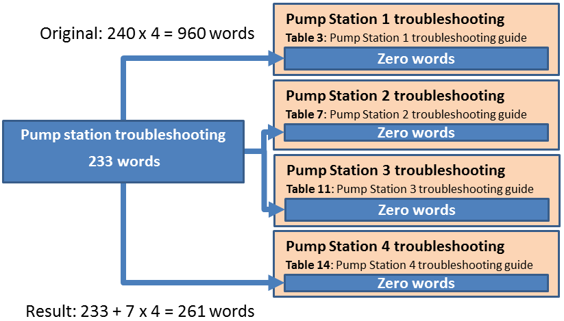

Localising content using single sourcing16/06/15

Because Australia is part of the Asia-Pacific region, some organisations need to produce foreign-language versions of their content. The cost and turnaround time of translating and localising content can be significantly reduced by using single sourcing techniques and tools.
Translation and localisation
To deliver content to the users in another country we may need to:
- translate it from English to their language
- localise the content for cultural and market reasons.
Localisation includes:
- recognising local cultures and avoiding offence
- using local standards, such as date formats or US spelling
- replacing graphics with local versions.
To keep it brief, I’ll use the term localisation to cover translating content and meeting local needs.
Create single sourced content in English first
At 25 cents (US) per word, localisation for each target country can be expensive. This includes the:
- initial expense of localising words, phrases and graphics
- ongoing expense of localising changed content
- organisational and desktop publishing costs
Once the decision is made to invest in localisation, the first task is to import the content into an authoring tool; one that supports both single sourcing and localisation. In Creating single sourcing topics, I discussed how we can import and isolate common content to reuse in published topics.
Localise unique content only
Once the content is in our authoring tool, we can employ the localisation module to output the unique content only. Let’s look at use our operations manual from the Creating single sourcing topics article.
If we had to localise the original four pumping station troubleshooting topics, we would be charged for 960 words for just one country.
After creating our common topic (in blue), we only need to translate it (233 words) and the unique content in each of the four topics that use it (7 words each, shown in light brown, ignoring headings) totalling 261 words. This saves 73% in translation costs alone for the troubleshooting sections.
You may also have noticed that ‘table’, ‘pump station’ and ‘troubleshooting guide’ appear in each of the four troubleshooting topics. We can isolate these too to save a further 15 words. It doesn’t sound much but everything adds up when localising for 20-25 countries.
Real world examples
Two global companies have reduced localisation costs by:
- 90% saving over $3 million annually across 20-25 countries
- 50% saving $1.2 million annually while achieving faster turnaround times.
Conclusion
Before localising your content, consider isolating common content and reusing it within an authoring tool that can support and manage localisation for each target country. This is likely to reduce the overall cost by 50-90% while improving your organisation’s efficiency.
In next month’s article, I'll discuss how to create role-based user guides using single sourcing techniques and tools. This is based on our recent success for a leading hospitality group.